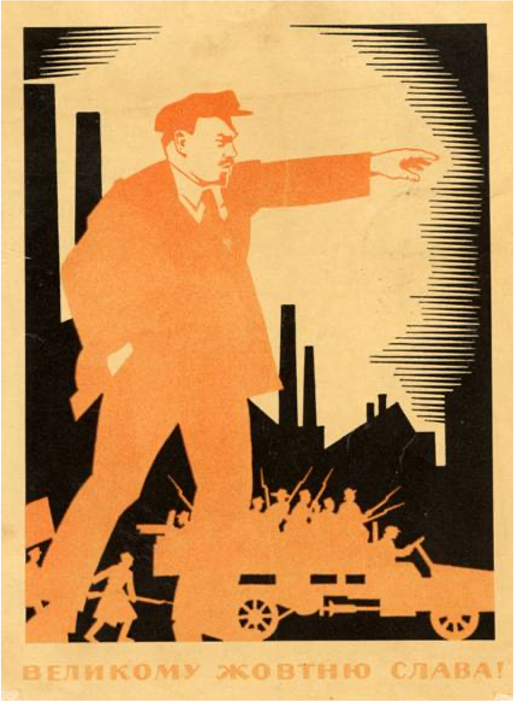

Why Face-to-Face Still Matters
Are digital networks a complement to, or substitute for, face-to-face?
‘Layered’ Structure
- Moving ‘stuff’ around
- Making markets
- Doing deals
- Talking shop
- Face-to-face now
- What, then, for 21st-Century places?
Just one small thing…
This Time it’s Different…Or Not
Moving Stuff Around
What’s the bandwidth of an A380?
(In)Flexibility
Making Markets
Doing Deals
Talking Shop
What Do They DO?
In Practice
Real people talking about real jobs:
- Nearly 50 interviews in wide range of industries
- Not a statistically-robust sample
- Range of roles and knowledge-intensive sectors
What We Learned
Digital in all cases, physical to varying degrees in others.
- Need varies by industry, career stage, and relationship stage.
- Differential importance of knowledge, trust / confidence, and judgement
- All more or less amenable to replacement by ICT
Private Investment
“face-to-face is mission-critical at the beginning, I struggle to see how you could do it any other way. Forming a judgement about someone, do they know what they’re doing, is there reality behind the pitch… can only be done face to face…”
Advertising
“I spend a lot of time in informal meetings — it’s an industry of persuasion: building confidence, getting people ready to back an idea, or to work late for you…”
Property
“You can’t rely on emails — people don’t read them unless the word ‘bonus’ is in the heading!”
Law
“They like to come here. We have better biscuits.”
What, Then, For 21st Century Places?
Much will change…
But as over last 30 years:
- Digitisation (virtualisation?) of economy & society continues
- Impact on high-value, knowledge-intensive ones that hitherto seemed immune
- Impact will be less on great cities and their cores than on second- or third-tier cities
But also surprising continuity…
World Cities
Different patterns of occupation, interaction
- Less emphasis on large floorplates and serried ranks of offices or cubicles
- Some types of employment and back-office space much more vulnerable
- Discovery of flexibility to support WFH / remote working will affect local demand patterns
Wider benefits of agglomeration and clustering still works in favour of these cities.
What is to be done?
- ICT will mix themes of change and continuity:
- No magic digital bullet , where peripheral towns suddenly attract dozens of firms, never before considered them
- Need for careful understanding of scale, location & interrelationships
- Build a basis for effective public policy at urban and regional level

And in the end…
Drawing together the book’s themes, revolving around:
- Core importance of human contact,
- F2F more important, not less; despite ‘e-everywhere’
- Because when insight & knowledge matter, F2F will always have the edge
- ICT allows more choice, accelerates change, enables unparalleled contact; but it doesn’t replace F2F
COVID-19:
- Ran a full-strength test of what an e-only work world could be like.
- Will cement and accelerate certain tendencies that already existed
- Won’t create fundamentally new ones: by looking backward we can see overall continuity across multiple seeming ‘revolutions’
The pandemic may be the petrol, but it is not the fire.
Final Thought!
“… ‘Being there’ is still at the core of the urban experience. Even in a world of instant digital access and unparalleled connectivity, central places matter, and face-to-face contact is what they do for a living. That is their story, and it will be their future.”
Thank you!
 @jreades / @jreades@mapstodon.space /
@jreades / @jreades@mapstodon.space /  jreades
jreades
Why Face-to-Face Still Matters is available from Bristol University Press for £19.99 (Or less if buying direct!).

Jon Reades (CASA @ UCL)